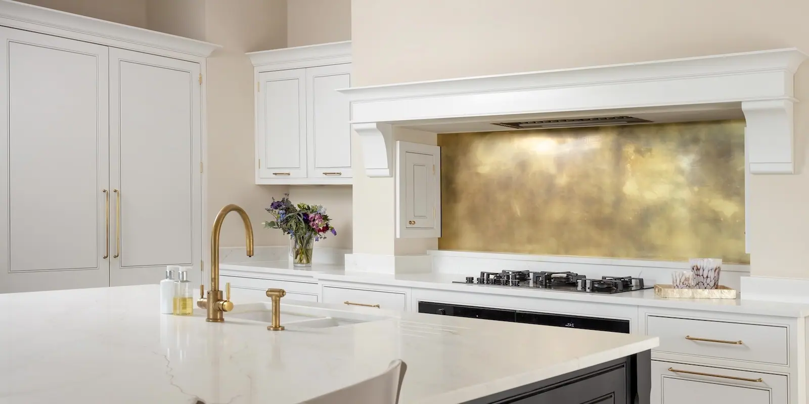
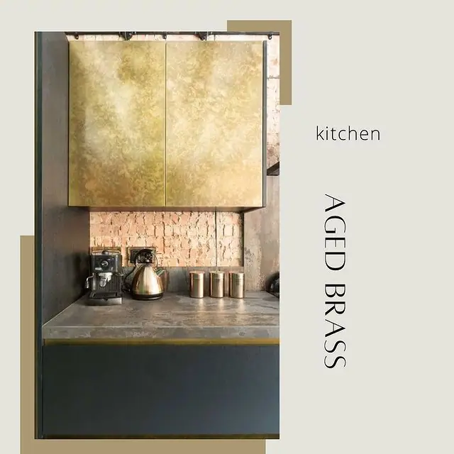
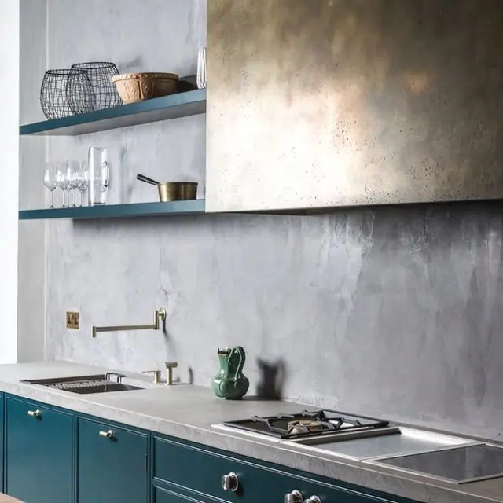

Renowned for its resilience and classic appeal, brass not only adds a lustrous shine to home interiors but also stands up to the rigorous demands of commercial usage. Whether it’s elevating a kitchen or bathroom in a private residence, or adding a luxurious touch to a hotel lobby or restaurant dining area, brass cupboard doors provide a sophisticated focal point.
The versatility of brass makes it ideal for blending harmoniously with both traditional and contemporary decors across various spaces.
Contact Halman Thompson for more information or request a bespoke quote .

Bespoke Designs
At Halman Thompson, each brass cupboard door we craft is tailored to you, designed to reflect your individual style and preferences. Our skilled artisans customise the perfect shade and texture of brass to match your specific requirements.
Whether it’s a subtle Somerset finish with its myriad of brass tones or a more understated natural brass, each piece is bespoke. We cater to all dimensions and design preferences, ensuring that from the moment of crafting to delivery, your brass cupboard doors enhance your space seamlessly and stylishly.

Perfect for every space
Our extensive range of natural and aged brass finishes ensures there is a perfect match for every taste and every space, making these brass cupboard doors ideal for every room in your home as well as commercial settings.
For the home, imagine a Cambridgeshire milled brass media unit shimmering under your living room lights or a Somerset aged brass wardrobe adding depth and character to your bedroom.
Our brass cupboard doors offer both beauty and practicality for commercial spaces, too… Try adding a touch of luxury to a boutique hotel lobby with an eye-catching closet with brass doors, or bringing warmth to a restaurant’s dining area with brushed brass cabinets. Get in touch for a bespoke quote .
Handmade Brass Cupboard Doors
Halman Thompson’s brass cupboard doors can suit any aesthetic. From the heritage charm of the Flintshire finish with its textured, speckled design to the subtle elegance of the Wiltshire aged finish, each is handcrafted for a unique and luxurious addition to any environment.
Our exquisite range of brass finishes includes:
- Cambridgeshire Finish : A smooth, matte brass finish with a beautifully milled aesthetic that highlights the raw beauty of natural brass.
- Somerset Finish : A complex, multi-tonal finish featuring a patchwork of swirls and shards that creates a striking stained glass effect.
- Wiltshire Finish : A light, aged brass with mottled tones of shining and muted brass for a textural, golden finish.
- Natural Brass : An unsurpassed, pure brass finish that offers a classic, refined look.
- Brushed Brass : Lightly burnished for a softened sheen, this ‘antique’ finish brings a touch of timeless elegance.
- Berkshire Bronzed Brass Finish : A lightly burnished, antique-effect brass that adds depth and vintage flair.
- Flintshire Finish : Heavily speckled, featuring patterns of darker aged brass against a brighter background, perfect for a heritage feel.
The Ageing Process
At Halman Thompson, our bespoke ageing process is integral to our craftsmanship. We artificially age each piece of brass by hand, enhancing the metal’s natural beauty and developing unique patterns and textures that align with your preferences. This meticulous, hands-on approach ensures that each piece not only meets our high standards for quality and durability but also maintains a consistent, high-quality finish across all projects. This method results in each brass cupboard door being truly one-of-a-kind, providing a distinctive and lasting addition to any space.
Care Instructions
Caring for your brass cupboard doors is simple and ensures their longevity and aesthetic appeal. Regular wiping with a soft cloth and warm soapy water is all it takes to maintain their lustrous finish – no harsh chemicals or special cleaning solutions necessary!
We provide detailed care instructions with every order, and our team is always ready to assist with any questions, helping you keep your brass installations pristine and vibrant for years to come.
Contact Halman Thompson or complete the quote form for a personalised brass cupboard door quotation.


If you can dream it, we’ll make it.
Bars, balustrades, staircases, worktops, cladding and pieces that don’t have a name yet. Our designers and craftspeople work in brass, copper, zinc and steel, and alongside wood.